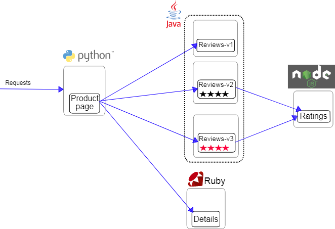

本文以bookinfo为demo，测试istio的配置请求路由功能。
bookinfo介绍
bookinfo由四个单独的微服务构成，用来演示多种 Istio 特性。这个应用模仿在线书店的一个分类，显示一本书的信息。页面上会显示一本书的描述，书籍的细节（ISBN、页数等），以及关于这本书的一些评论。
Bookinfo 应用分为四个单独的微服务：
- productpage ：productpage 微服务会调用 details 和 reviews 两个微服务，用来生成页面。
- details ：这个微服务包含了书籍的信息。
- reviews ：这个微服务包含了书籍相关的评论。它还会调用 ratings 微服务。
- ratings ：ratings 微服务中包含了由书籍评价组成的评级信息。
reviews 微服务有 3 个版本： - v1 版本不会调用 ratings 服务。 - v2 版本会调用 ratings 服务，并使用 1 到 5 个黑色星形图标来显示评分信息。 - v3 版本会调用 ratings 服务，并使用 1 到 5 个红色星形图标来显示评分信息。
下图展示了这个应用的端到端架构。
 Bookinfo 是一个异构应用，几个微服务是由不同的语言编写的。这些服务对 Istio 并无依赖，但是构成了一个有代表性的服务网格的例子：它由多个服务、多个语言构成，并且 reviews 服务具有多个版本。
部署bookinfo
有两种部署方式: - 手工注入istio sidecar - 自动注入istio sidecar
1.1 手工注入方式
kubectl apply -f <(istioctl kube-inject -f samples/bookinfo/platform/kube/bookinfo.yaml)
istioctl kube-inject 命令用于在在部署应用之前修改 bookinfo.yaml。
1.2 自动注入方式
kubectl label namespace default istio-injection=enabled
我们在这儿选择自动注入的方式演示.
2.部署bookinfo的pod
kubectl apply -f samples/bookinfo/platform/kube/bookinfo.yaml
上面的命令会启动全部的四个服务，其中也包括了 reviews 服务的三个版本（v1、v2 以及 v3）
3.确认pod和svc的正确
pod:
# kubectl get pods
NAME READY STATUS RESTARTS AGE
details-v1-5544dc4896-db5rs 2/2 Running 0 9m22s
productpage-v1-7868c48878-dgzrg 2/2 Running 0 9m21s
ratings-v1-858fb7569b-qjx9p 2/2 Running 0 9m21s
reviews-v1-796d4c54d7-b6lrf 2/2 Running 0 9m21s
reviews-v2-5d5d57db85-p7g84 2/2 Running 0 9m22s
reviews-v3-77c6b4bdff-67vzb 2/2 Running 0 9m22s
svc:
# kubectl get svc
NAME TYPE CLUSTER-IP EXTERNAL-IP PORT(S) AGE
details ClusterIP 10.108.58.174 <none> 9080/TCP 18m
kubernetes ClusterIP 10.96.0.1 <none> 443/TCP 41d
productpage ClusterIP 10.106.185.134 <none> 9080/TCP 18m
ratings ClusterIP 10.101.89.166 <none> 9080/TCP 18m
reviews ClusterIP 10.97.204.139 <none> 9080/TCP 18m
测试一把:
# kubectl exec -it $(kubectl get pod -l app=ratings -o jsonpath='{.items[0].metadata.name}') -c ratings -- curl productpage:9080/productpage | grep -o "<title>.*</title>"
<title>Simple Bookstore App</title>
接着是重头戏–应用(其实就是gateway和rule的玩法)
1.首先部署一个应用缺省目标规则
kubectl apply -f samples/bookinfo/networking/destination-rule-all.yaml
kubectl apply -f samples/bookinfo/networking/bookinfo-gateway.yaml
查看下gateway:
# kubectl describe gateways.networking.istio.io bookinfo-gateway
Name: bookinfo-gateway
Namespace: default
Labels: <none>
Annotations: kubectl.kubernetes.io/last-applied-configuration:
{"apiVersion":"networking.istio.io/v1alpha3","kind":"Gateway","metadata":{"annotations":{},"name":"bookinfo-gateway","namespace":"default"...
API Version: networking.istio.io/v1alpha3
Kind: Gateway
Metadata:
Creation Timestamp: 2019-07-04T09:17:55Z
Generation: 1
Resource Version: 6692999
Self Link: /apis/networking.istio.io/v1alpha3/namespaces/default/gateways/bookinfo-gateway
UID: 9b825a1e-9e3c-11e9-bbb7-5254007c6eed
Spec:
Selector:
Istio: ingressgateway
Servers:
Hosts:
*
Port:
Name: http
Number: 80
Protocol: HTTP
Events: <none>
根据定义,我们在浏览器中打开: nodeip+nodeport(istio-ingressgateway服务暴露的nodeport-31380)/productpage ,如 http://192.168.3.25:31380/productpage
就可以访问到bookinfo这个应用了.
在浏览器中访问 Bookinfo 应用程序的 /productpage 并刷新几次。 我们会注意到，有时书评的输出包含星级评分，有时则不包含。 这是因为没有明确的默认服务版本路由，Istio 将以循环方式请求路由到所有可用版本。
2.应用 virtual service
要仅路由到唯一一个版本，需要应用为微服务设置默认版本的 virtual service。在这种情况下，virtual service 将所有流量路由到每个微服务的 v1 版本。
# kubectl apply -f samples/bookinfo/networking/virtual-service-all-v1.yaml
virtualservice.networking.istio.io/productpage created
virtualservice.networking.istio.io/reviews created
virtualservice.networking.istio.io/ratings created
virtualservice.networking.istio.io/details created
这样在浏览器中无论怎么刷新,都是如下图:

这是因为我们将 Istio 配置为将评论服务的所有流量路由到版本 reviews:v1，而此版本的服务不访问星级评分服务。
查看已定义的路由:
# kubectl get virtualservices
NAME GATEWAYS HOSTS AGE
bookinfo [bookinfo-gateway] [*] 24h
details [details] 64s
productpage [productpage] 64s
ratings [ratings] 64s
reviews [reviews] 64s
# kubectl get destinationrules
NAME HOST AGE
details details 23h
productpage productpage 23h
ratings ratings 23h
reviews reviews 23h
3.基于用户身份的路由
首先需要注意的是，Istio 对用户身份没有任何特殊的内置机制。这个例子的基础在于， productpage 服务在所有针对 reviews 服务的调用请求中 都加自定义的 HTTP header，从而达到在流量中对最终用户身份识别的这一效果。
这个场景,我们将更改路由配置，以便将来自特定用户的所有流量路由到特定服务版本。在这种情况下，来自名为 jason 的用户的所有流量将被路由到服务 reviews:v2(reviews:v2 是包含星级评分功能的版本)
kubectl apply -f samples/bookinfo/networking/virtual-service-reviews-test-v2.yaml
在 Bookinfo 应用程序的 /productpage 上，以用户 jason 身份登录，刷新浏览器，发现 会显示黑星的版本
而以其他用户身份登录，刷新浏览器，又会回到之前无星的版本，这是因为除了 Jason 之外，所有用户的流量都被路由到 reviews:v1。